Story Hunter · design study II · developing the casting wall
The Casting Wall
You picked this room. Now we develop it with real contact-sheet energy — the photographer's proof sheet and the grease pencil, married to how professional editors actually cull (Photo Mechanic, Capture One). Every frame below is one of your real week-39 scouts. The goal: lock the exact look and the marking language before we build.
THE HEART · the marking language
China-marker vocabulary
Every mark is a hand-drawn wax stroke, never a clean shape — the wobble is the authenticity. These ARE the interaction: a click circles, again crosses out, a modifier boxes. Keyboard mirrors it.
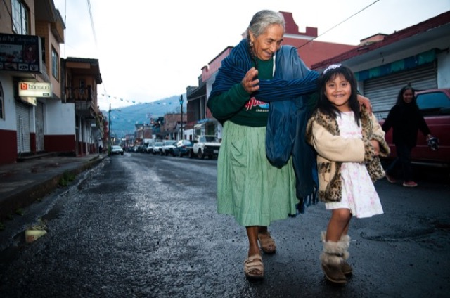
The Town That Fired Everyo
Circle = selectthe loop that overshoots. "This one."
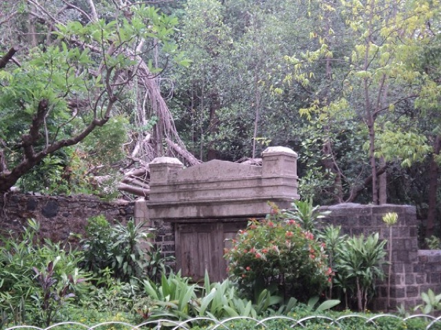
The City That Lost Its Vul
Cross-out = killthe angry red X. Dead.
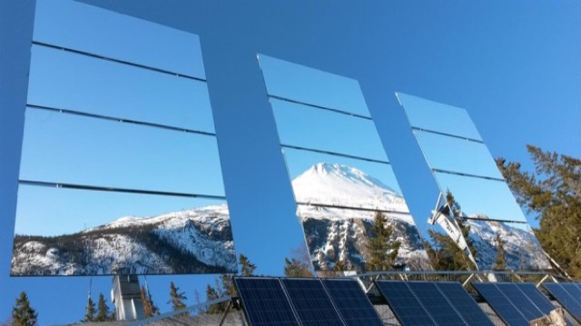
The Town That Built Its Ow
Box = favoritea squared-off keeper, above a select.
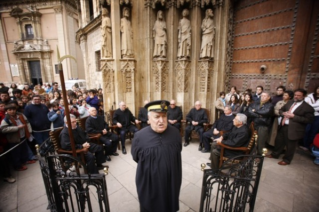
The Water Court of Valenci
Tick = maybethe lighter yes. Non-committal.
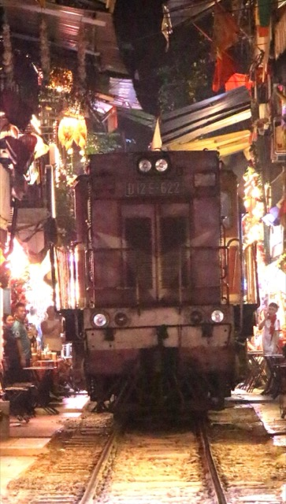
Crop corners
Crop cornersframe it — a note on composition.
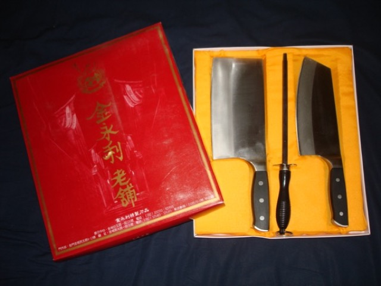
Star = the opener
Star = the openerthe standout. The cold-open.
the six-mark wax vocabulary, drawn over your real frames
TREATMENT A
The Proof Sheet
Tradition: the darkroom contact print · Magnum contact sheets · the 36-exposure roll
The whole week as one 8×10 sheet: small dense frames in film-strip rows, frame numbers along the rebate (1, 1A, 2…), deep photographic black gutters, on warm near-black proof paper. You mark selects and kills straight onto it in red wax. The most authentic — it feels like a real object on a light box.
1The Town That Fired Everyo1AThe Island That Forges Bom
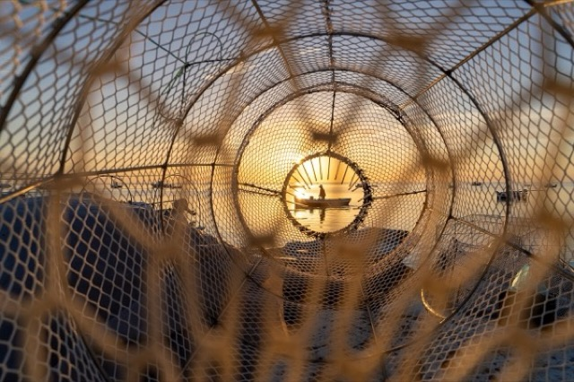
2The Crab They Named After 3The Town That Built Its Ow
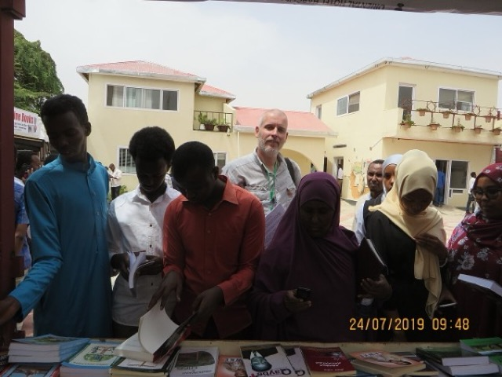
4Book Fair of a Country Tha4AThe Water Court of Valenci5The City That Lost Its Vul
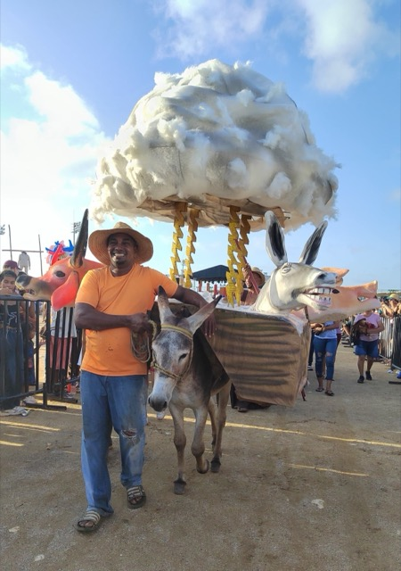
6The Donkey Wears Couture7The Cafe Street the Govern
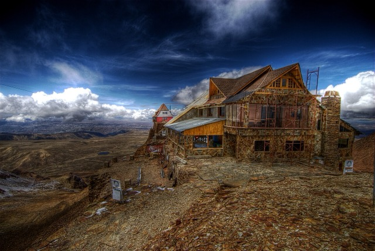
8The World's Highest Ski Re
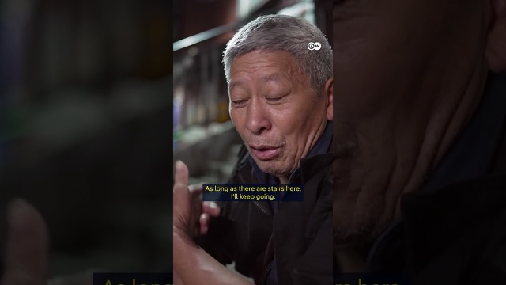
8AThe Last Bang Bang Men of
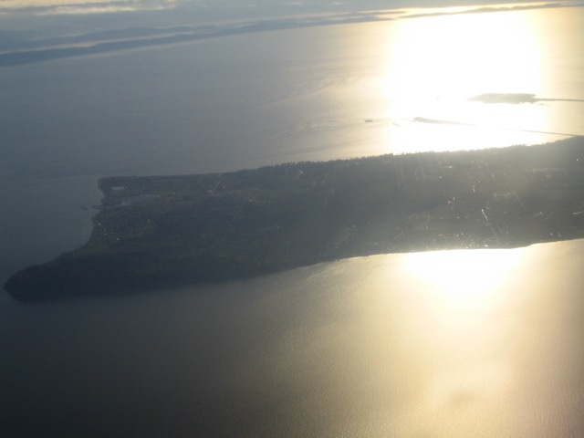
9The Town America Forgot to10The Town That Fired Everyo11The Island That Forges Bom12The Crab They Named After 12AThe Town That Built Its Ow13Book Fair of a Country Tha14The Water Court of Valenci
mockup · 18 of your scouts as a proof sheet; six marked in wax
TREATMENT BWHAT I'D BUILD
The Culling Wall
Tradition: Photo Mechanic / Capture One culling · the working casting board
The proof sheet's soul, made a working tool: bigger frames you can judge, the wax marks as the decision layer, plus the pro-culling chrome — a star rating in the corner, a tag for the shortlist, a live count. Keyboard-first with auto-advance: mark a frame and it jumps to the next, so you cull a whole week in one fast pass, no mouse.
Keyboard-only with auto-advance: X kills, F tags, 1–5 rates, then jumps to the next frame
Reject-first two-pass: a Kill Pass (keep/kill only), then rate the survivors
Filter-to-picks in one key: collapse the wall to only your tagged selects
The loupe: press-and-hold any frame to read its full dossier without leaving the wall
The Town That Fired Everyo★★★★·The Island That Forges Bom★★★··The Crab They Named After ·····The Town That Built Its Ow★★★★★Book Fair of a Country Tha★★···The Water Court of Valenci★★★★·
mockup · the working wall — wax marks + star rating + keyboard cull; my recommended build
TREATMENT C
The Kill Pass
Tradition: the reject-first cull · FastRawViewer's binary flow
The fastest mode: one frame at a time, full and big, only two choices — keep or kill. You blast through the week's drop in a minute, killing the obvious no's; whatever survives goes to the wall for real rating. This is how pros clear 80% of the pile before they think hard.
frame 7 / 18 · Bolivia · loss
↑ keep↓ kill
Space skips. Every choice auto-advances. Nothing is rated yet — this pass only clears the dead weight.
■■■■■■□□□□□□□□□□□□ · 6 kept · 0 killed
mockup · the binary keep/kill pass — clears the pile before the real judging
TREATMENT D
The Loupe
Tradition: the chrome-and-glass magnifier on the light box
When a frame stops you, press and hold: it magnifies under a loupe and the dossier reads beside it as field notes. You inspect without leaving the wall — the words are always one press away, so a weak scout photo never sinks a strong story.
HE-2026-040 · resilience · ★★★★
A town that fired its entire government fifteen years ago and still governs itself by assembly. The story is not the uprising — it's the maintenance. What fifteen years of self-rule does to a place, and what the second generation, raised without parties, thinks politics even is.
mockup · press-and-hold to inspect — the loupe magnifies, the dossier reads as field notes
THE CHOICE · materiality
Darkroom or proof paper
The same frame, two substrates. Which world does the wall live in?
● darkroom · warm near-black
The proof-sheet world. Frames glow, the wax pops, it feels like a light box at night. My lean.
● proof paper · semi-gloss white
The print-in-hand world. Continuous with the white spreadsheet; calmer, more editorial.
mockup · pick the substrate — dark light-box vs warm proof paper